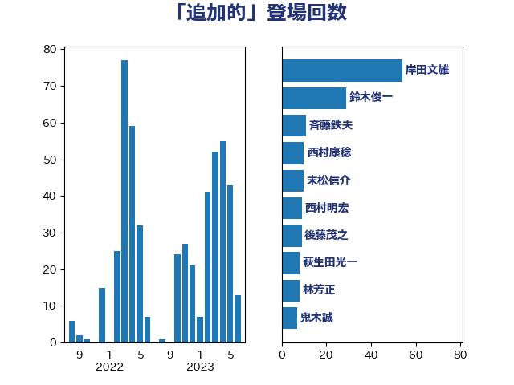

単語「追加的」

| 岸田文雄 | 自由民主党 | 54 回 |
| 鈴木俊一 | 自由民主党 | 29 回 |
| 斉藤鉄夫 | 公明党 | 11 回 |
| 西村康稔 | 自由民主党 | 10 回 |
| 末松信介 | 自由民主党 | 10 回 |
| 西村明宏 | 自由民主党 | 9 回 |
| 後藤茂之 | 自由民主党 | 9 回 |
| 萩生田光一 | 自由民主党 | 8 回 |
| 林芳正 | 自由民主党 | 8 回 |
| 鬼木誠 | 立憲民主党 | 7 回 |
| 田村まみ | 国民民主党 | 7 回 |
| 谷公一 | 自由民主党 | 6 回 |
| 松本剛明 | 自由民主党 | 6 回 |
| 山添拓 | 日本共産党 | 5 回 |
| 加藤勝信 | 自由民主党 | 5 回 |
| 緒方林太郎 | 無所属 | 4 回 |
| 石川博崇 | 公明党 | 4 回 |
| 松野博一 | 自由民主党 | 4 回 |
| 小倉將信 | 自由民主党 | 4 回 |
| 高橋光男 | 公明党 | 3 回 |
| 石橋通宏 | 立憲民主党 | 3 回 |
| 小沼巧 | 立憲民主党 | 3 回 |
| 小林茂樹 | 自由民主党 | 3 回 |
| 高橋千鶴子 | 日本共産党 | 2 回 |
| 鈴木貴子 | 自由民主党 | 2 回 |
| 野田聖子 | 自由民主党 | 2 回 |
| 谷合正明 | 公明党 | 2 回 |
| 若宮健嗣 | 自由民主党 | 2 回 |
| 稲津久 | 公明党 | 2 回 |
| 秋本真利 | 無所属 | 2 回 |
| 神田潤一 | 自由民主党 | 2 回 |
| 磯崎仁彦 | 自由民主党 | 2 回 |
| 石井正弘 | 自由民主党 | 2 回 |
| 玉木雄一郎 | 国民民主党 | 2 回 |
| 浜田靖一 | 自由民主党 | 2 回 |
| 庄子賢一 | 公明党 | 2 回 |
| 山口壯 | 自由民主党 | 2 回 |
| 小森卓郎 | 自由民主党 | 2 回 |
| 小林鷹之 | 自由民主党 | 2 回 |
| 宮崎勝 | 公明党 | 2 回 |
| 守島正 | 日本維新の会 | 2 回 |
| 吉良よし子 | 日本共産党 | 2 回 |
| 吉川元 | 立憲民主党 | 2 回 |
| 井上貴博 | 自由民主党 | 2 回 |
| 丸川珠代 | 自由民主党 | 2 回 |
| おおつき紅葉 | 立憲民主党 | 2 回 |
| 鰐淵洋子 | 公明党 | 1 回 |
| 馬場成志 | 自由民主党 | 1 回 |
| 馬場伸幸 | 日本維新の会 | 1 回 |
| 青柳仁士 | 日本維新の会 | 1 回 |
| 阿達雅志 | 自由民主党 | 1 回 |
| 長坂康正 | 自由民主党 | 1 回 |
| 鈴木庸介 | 立憲民主党 | 1 回 |
| 金子恭之 | 自由民主党 | 1 回 |
| 遠藤良太 | 日本維新の会 | 1 回 |
| 足立康史 | 日本維新の会 | 1 回 |
| 越智隆雄 | 自由民主党 | 1 回 |
| 葉梨康弘 | 自由民主党 | 1 回 |
| 若松謙維 | 公明党 | 1 回 |
| 舩後靖彦 | れいわ新選組 | 1 回 |
| 緑川貴士 | 立憲民主党 | 1 回 |
| 細田健一 | 自由民主党 | 1 回 |
| 米山隆一 | 立憲民主党 | 1 回 |
| 竹詰仁 | 国民民主党 | 1 回 |
| 秋野公造 | 公明党 | 1 回 |
| 石井拓 | 自由民主党 | 1 回 |
| 片山さつき | 自由民主党 | 1 回 |
| 浅野哲 | 国民民主党 | 1 回 |
| 河野太郎 | 自由民主党 | 1 回 |
| 櫻井周 | 立憲民主党 | 1 回 |
| 森本真治 | 立憲民主党 | 1 回 |
| 森屋隆 | 立憲民主党 | 1 回 |
| 梅谷守 | 立憲民主党 | 1 回 |
| 柿沢未途 | 無所属 | 1 回 |
| 柳ヶ瀬裕文 | 日本維新の会 | 1 回 |
| 杉尾秀哉 | 立憲民主党 | 1 回 |
| 本庄知史 | 立憲民主党 | 1 回 |
| 末松義規 | 立憲民主党 | 1 回 |
| 木原誠二 | 自由民主党 | 1 回 |
| 平将明 | 自由民主党 | 1 回 |
| 川田龍平 | 立憲民主党 | 1 回 |
| 岬麻紀 | 日本維新の会 | 1 回 |
| 山際大志郎 | 自由民主党 | 1 回 |
| 山田賢司 | 自由民主党 | 1 回 |
| 山田美樹 | 自由民主党 | 1 回 |
| 山口晋 | 自由民主党 | 1 回 |
| 山下貴司 | 自由民主党 | 1 回 |
| 尾身朝子 | 自由民主党 | 1 回 |
| 小沢雅仁 | 立憲民主党 | 1 回 |
| 宮路拓馬 | 自由民主党 | 1 回 |
| 宮下一郎 | 自由民主党 | 1 回 |
| 宗清皇一 | 自由民主党 | 1 回 |
| 大野泰正 | 自由民主党 | 1 回 |
| 大岡敏孝 | 自由民主党 | 1 回 |
| 大塚耕平 | 国民民主党 | 1 回 |
| 塩田博昭 | 公明党 | 1 回 |
| 堂込麻紀子 | 無所属 | 1 回 |
| 城内実 | 自由民主党 | 1 回 |
| 古川禎久 | 自由民主党 | 1 回 |
| 北神圭朗 | 無所属 | 1 回 |
| 倉林明子 | 日本共産党 | 1 回 |
| 伊藤孝恵 | 国民民主党 | 1 回 |
| 伊波洋一 | 無所属 | 1 回 |
| 伊佐進一 | 公明党 | 1 回 |
| 今井絵理子 | 自由民主党 | 1 回 |
| 中谷真一 | 自由民主党 | 1 回 |
| 世耕弘成 | 自由民主党 | 1 回 |
| 上田勇 | 公明党 | 1 回 |
| 三浦靖 | 自由民主党 | 1 回 |
| ながえ孝子 | 無所属 | 1 回 |